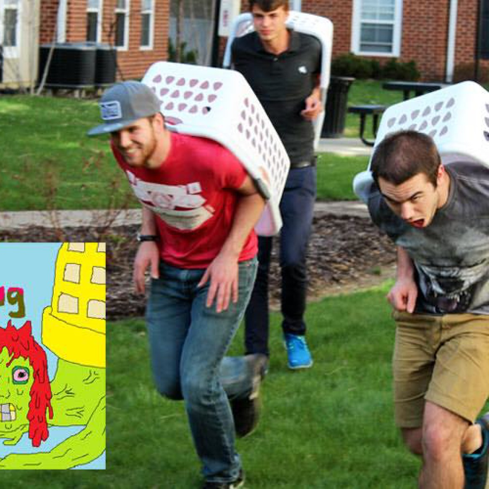

Run around on all fours, flipping off other hermits’ shells and fighting over a heavy sack. This yard is only big enough for one hermit team.

Game 59/100
Hermitug
Run around on all fours, flipping off other hermits’ shells and fighting over a heavy sack. This yard is only big enough for one hermit team.
Year2014
Development2 months
AvailabilityPlayable